🏅
班级风采
跑道上的风、球场上的笑、接力棒交接的一刻 —— 那些拼尽全力奔跑的少年身影， 是这个秋天最好的注脚。我们在这里记录每一次集结、每一次冲刺、每一次沸腾。
活动一览
CLASS MOMENTS运动会
SPORTS MEET晨光里，整支队伍穿着班旗方阵，踩着整齐的步伐走进操场。看台上加油声一浪高过一浪， 红色的塑胶跑道被秋阳晒得发烫。接力棒传出去的那一刻，全场都在喊同一句话： 加油，还有下一个！
拼搏不止于跑道
接力棒交接的是信任，冲过终点的是坚持。
有人在雨中为队友撑伞，有人在看台喊到声音沙哑——你们写下的，不只是名次。
愿今日拼过的每一步，都成为明日稳稳的底气。星辰不改，逐梦不停。
入场方阵 · 现场直击
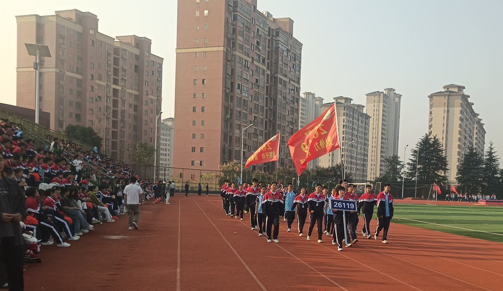
接力赛 · 现场直击
男生接力 · 交接棒的瞬间
女生接力 · 加油声里冲出终点
4×400 米接力 · 四棒接力
四棒、四段跑道、四次交接 —— 每一棒都在为下一棒攒力气。
第一棒 · 起跑反应
第二棒 · 弯道加速
第三棒 · 奋力追赶
第四棒 · 冲线瞬间
看台上的身影 · 雨中作伴
运动场上的主角在跑道，而另一场没有裁判的"比赛"，正在看台的雨伞下悄悄进行 —— 记笔记、递水、帮同学收伞。点击照片可放大查看。
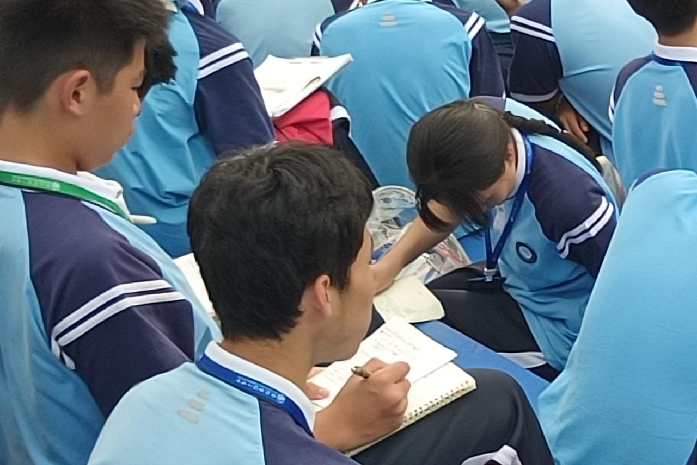
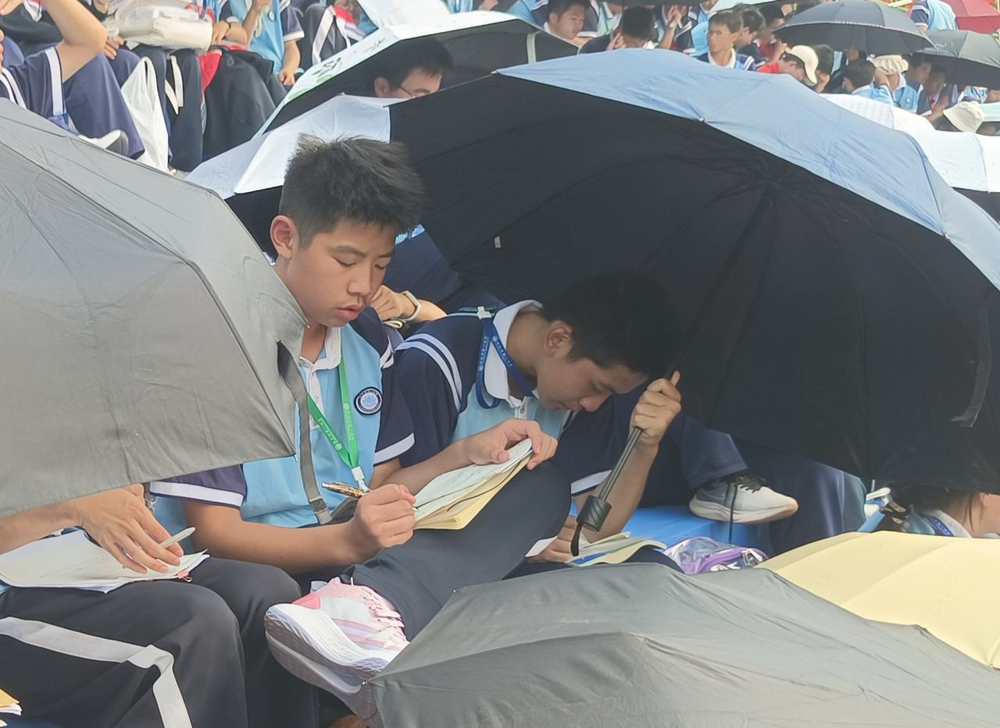
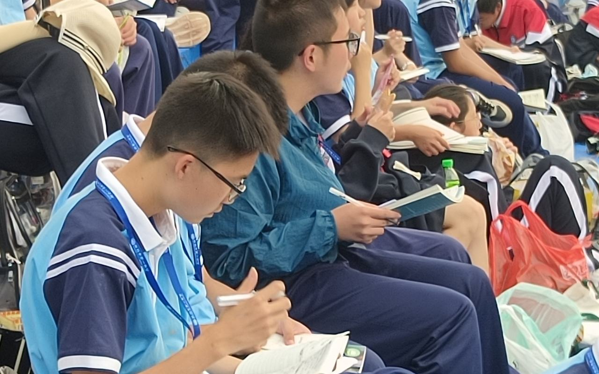
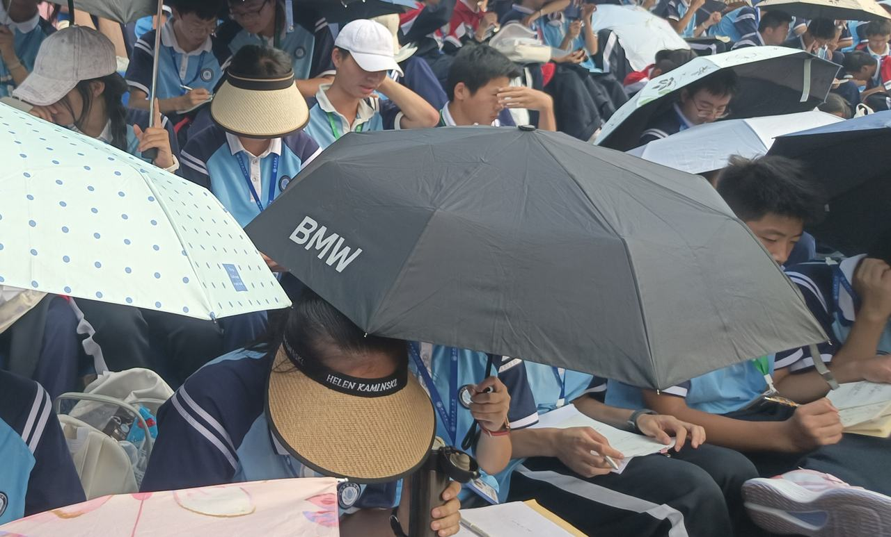
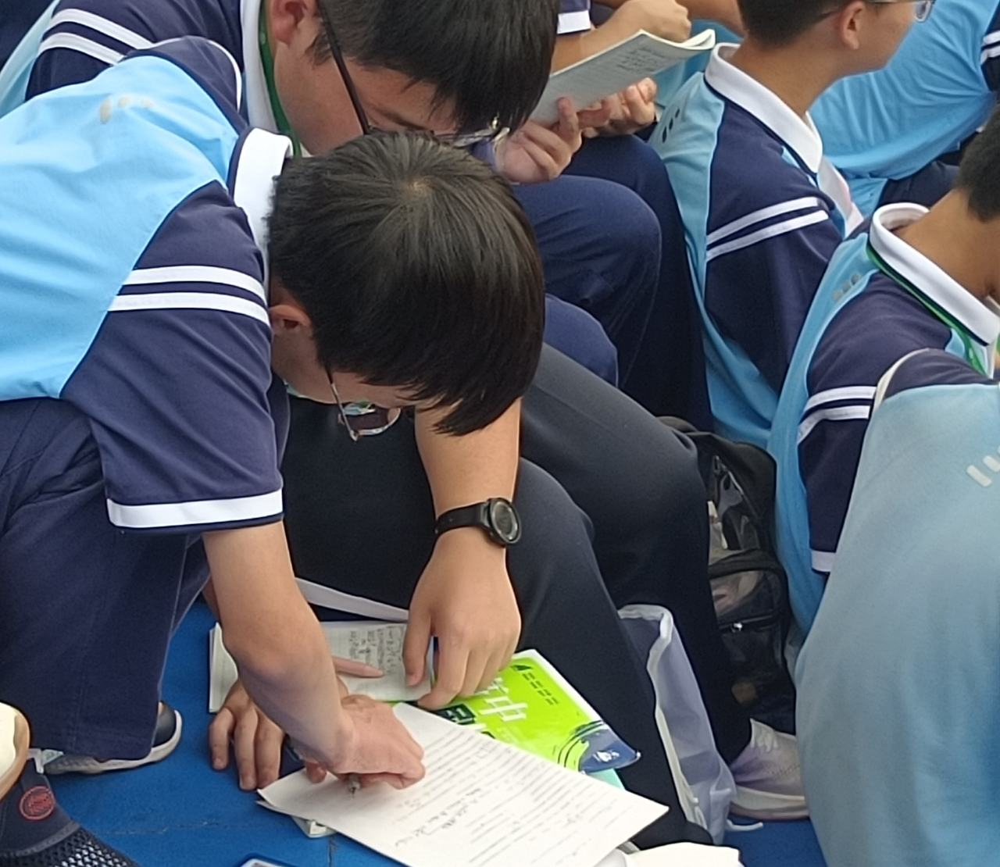
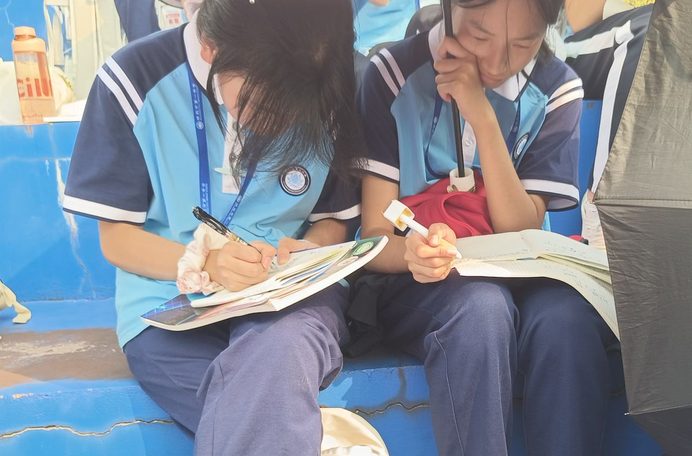
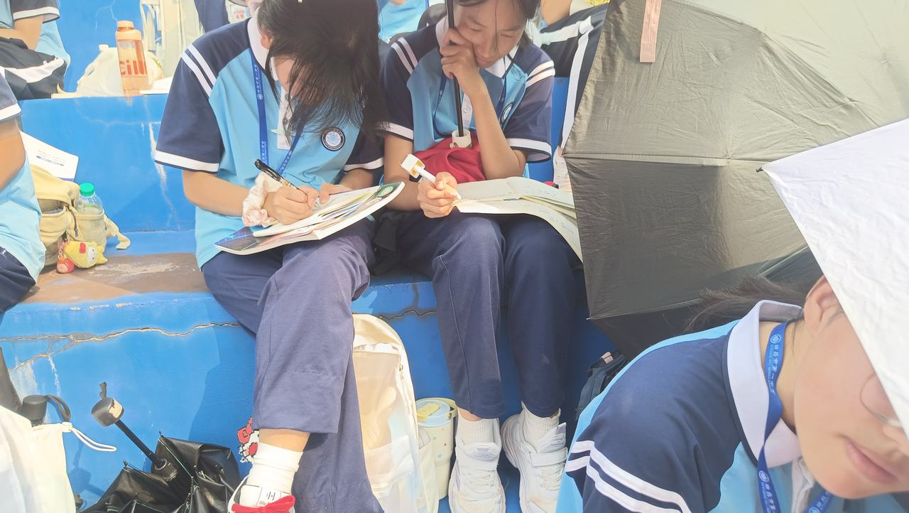
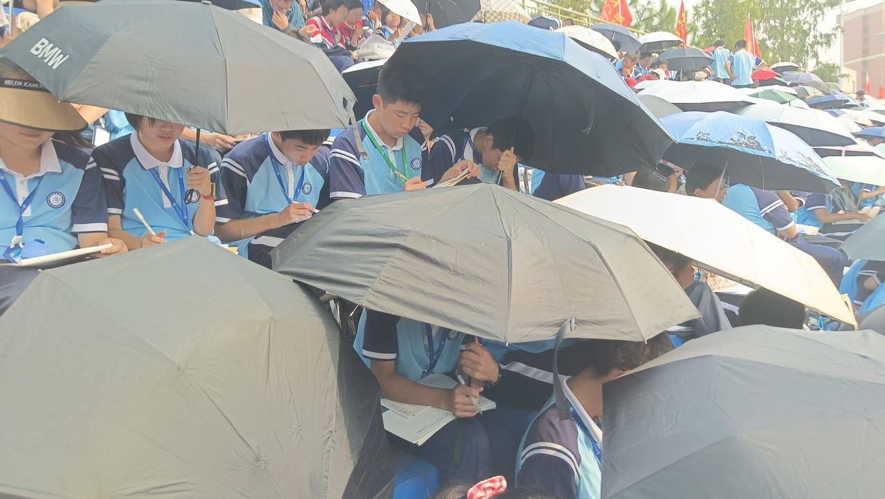
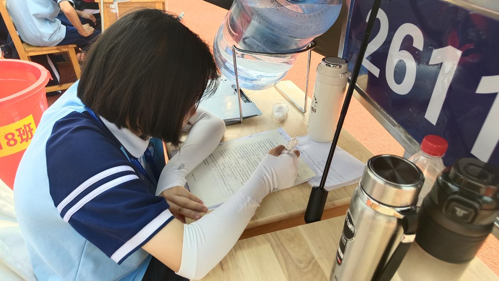
看台特写 · 光影瞬间
镜头拉近的那些一瞬 —— 笔尖、侧脸、眉眼之间的专注。点击照片可放大查看。
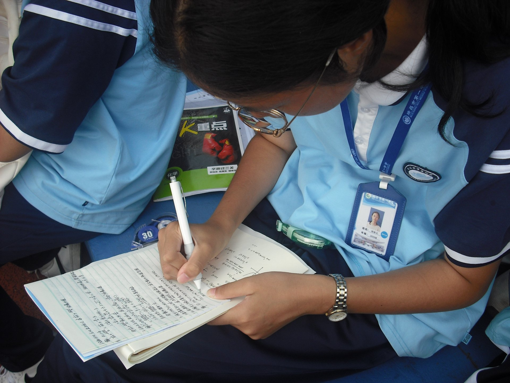
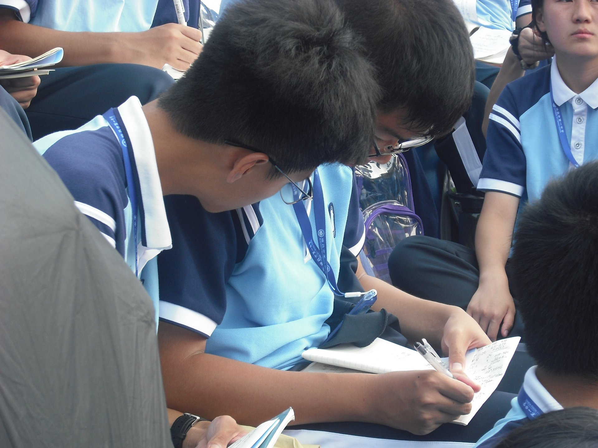
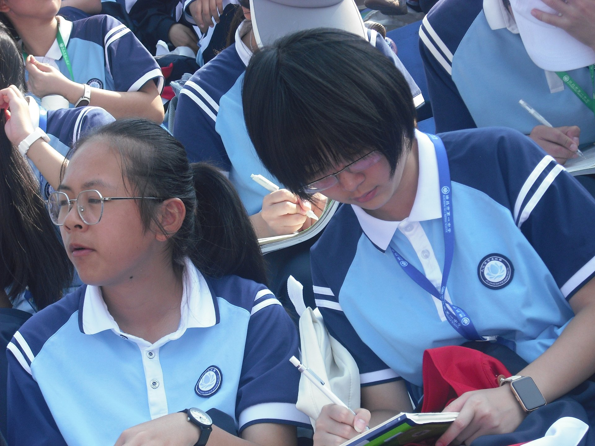
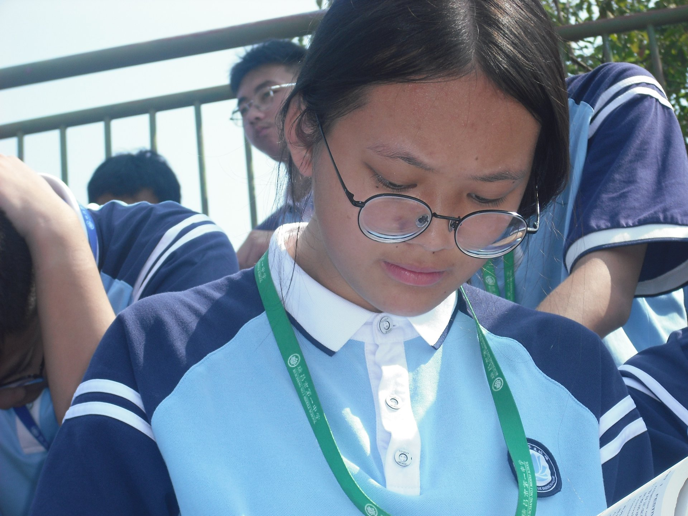